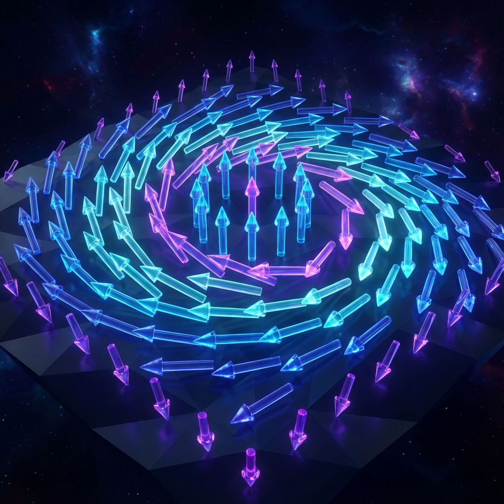
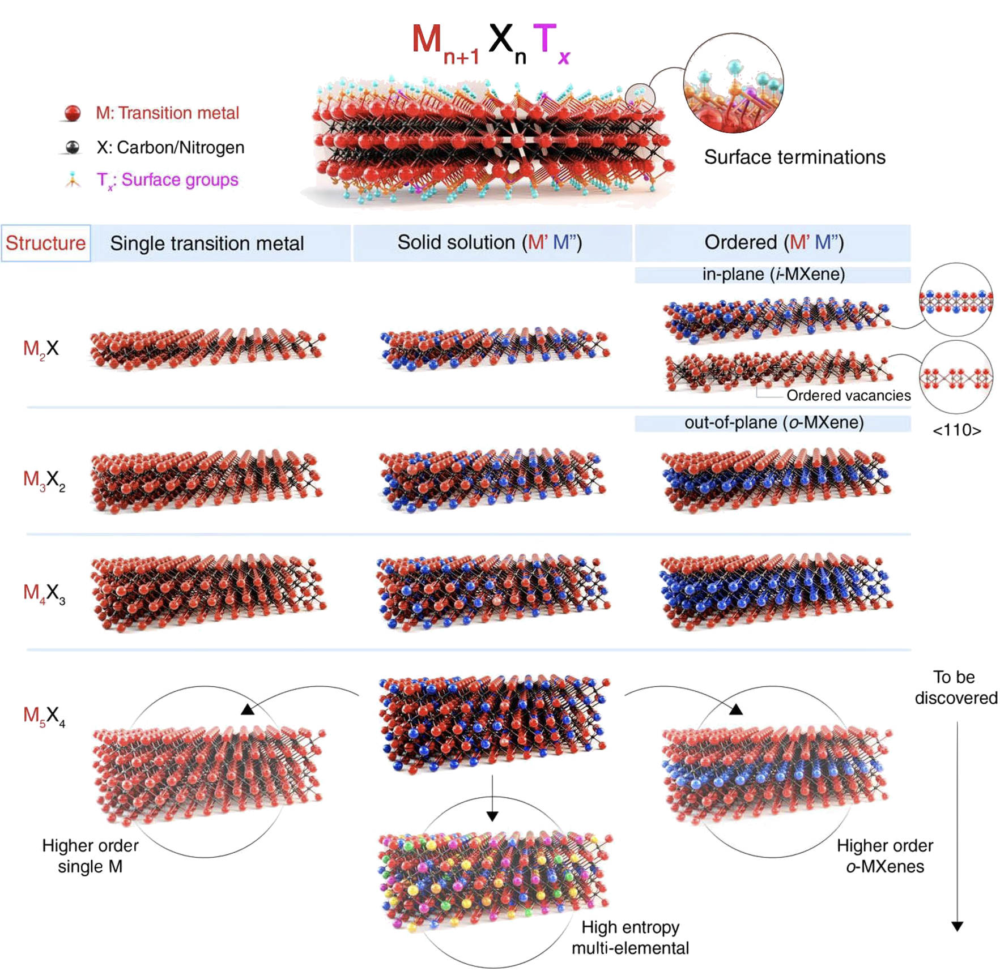
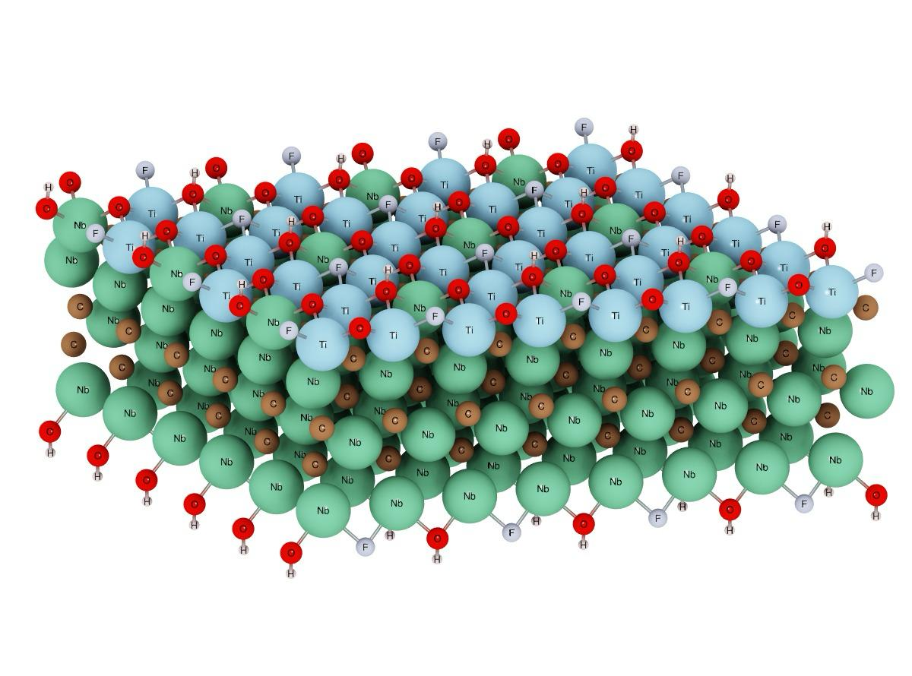

J. Ignacio Borge
Computational Materials Scientist
March 04
2026
University of Costa Rica
School of Chemistry
Computational Materials Theory
This work explores a 2D quantum many-body platform, investigating the potential emergence of topological spin textures — such as skyrmions — from non-magnetic constituents, bridging first-principles computation with quantum materials design.
We primarily use Density Functional Theory (DFT), complemented by tight-binding models, Kubo–Greenwood electrical conductivity, and our own in-house implementations, to systematically investigate the physical properties of 2D magnetic materials.
Magnetism emerges from non-magnetic parents: neither Nb nor Ti is magnetic on its own — yet their combination triggers a stable magnetic ordering.
Exploratory phase focused on mapping relevant magnetic properties, with an eye on spintronic applications — in particular the Dzyaloshinskii–Moriya Interaction (DMI).

From Non-Magnetic to Magnetic: A First-Principles Study of the Emergence of Magnetism in 2D (Nb1–xTix)4C3 MXenes
Borge-Durán, I.; Paul, A.; Grinberg, I. · Chem. Mater. 35, 7442–7449 (2023) · Bar-Ilan University
They are a large family of two-dimensional (2D) transition metal carbides and nitrides. Their structural versatility enables tailor-made magnetic and electronic properties.
Mn+1XnTx


Research Motivation
The solid solution (Nb0.8Ti0.2)4C3Tx exists experimentally. Our DFT published calculations confirm it is magnetic — a striking result given that neither Nb nor Ti is magnetic on its own.
From Non-Magnetic to Magnetic: A First-Principles Study of the Emergence of Magnetism in 2D (Nb1–xTix)4C3 MXenes
Borge-Durán, I.; Paul, A.; Grinberg, I. · Chem. Mater. 35, 7442–7449 (2023)
Since Ti substitution triggers magnetism, what happens if we replace Ti with other 3d transition metals? Can we tune — or even enhance — the magnetic properties by exploring the rest of the 3d family?
Candidate substitutions — 3d family
What new magnetic phases, exchange interactions, or DMI strengths might emerge? This is largely terra incognita.
The Unexplored Frontier
This prediction forces us to ask:
What spin phenomena lie unexplored in the 3d and 4d families?
Candidates such as (Nb,Zr)4C3
have already been synthesized, but their magnetism remains terra incognita.
Intersection of Research Areas
Where 2D spin engineering meets quantum information & topological order
My work
Skyrmions are topologically protected spin textures — characterized by a non-trivial winding number $Q = \frac{1}{4\pi}\int \mathbf{n}\cdot(\partial_x\mathbf{n}\times\partial_y\mathbf{n})\,d^2r$
QMB Perspective
Topologically ordered condensed matter systems as robust quantum substrates
My work
Skyrmion-based non-volatile memory: racetrack, ferroelectric control, SOT-MRAM — all exploiting topological stability
QMB Perspective
Topologically ordered matter as quantum memories — robust storage of quantum information
My work
Exchange $J_{ij}$ and DMI Hamiltonians are interacting quantum spin models — the quintessential many-body problem
QMB Perspective
Quantum many-body systems — their complexity, entanglement structure, and emergent phases
My work
DFT + tight-binding models are inherently matrix/tensor methods operating in Hilbert spaces of many-electron systems
QMB Perspective
Multi-linear-algebraic methods (tensor networks, DMRG) to tackle quantum complexity
These are not just analogies — they are the same physics, approached from complementary angles: first-principles materials design from one side, quantum information theory from the other.
Skyrmions serve as information bits driven along a nanostrip by ultra-low current densities. Their topological protection makes them resistant to thermal fluctuations and defects, enabling high-density, non-volatile storage.
Skyrmion nucleation and annihilation in 2D nanodisks emulate artificial synapses for binarized neural networks. The controllable creation/destruction mimics synaptic weight updates, enabling energy-efficient neuromorphic architectures.
Skyrmion-based logic gates exploit skyrmion creation, annihilation, and motion to perform Boolean operations — potentially replacing transistor-based logic with more compact, low-power alternatives.
In heterostructures like Fe3GeTe2/In2Se3, ferroelectric polarization reversal can create and annihilate skyrmions or switch their chirality — enabling non-volatile topological memory with virtually no current flow.
The 2024 observation of skyrmions above room temperature in the 2D ferromagnet Fe3GaTe2 showed they can be moved by low-density currents and exhibit a measurable skyrmion Hall effect. This addresses the long-standing barrier of cryogenic requirements.
Topological magneto-optical effects (topological RMCD) have been demonstrated in Fe3GeTe2, allowing all-optical detection of skyrmion states — important for non-invasive readout in integrated photonic-spintronic devices.
| Element | Config (3d) | nval | Δe | Mag. Moment (μB) |
Transition Temp. (°C) |
State | Conductivity (S/m) |
|---|---|---|---|---|---|---|---|
| Sc | 3d1 | 3 | −2 |
0.00
|
- | NM | 0.37 × 105 |
| Ti | 3d2 | 4 | −1 |
3.71
|
170.66 | AFM | 0.90 × 105 |
| V | 3d3 | 5 | 0 |
8.28
|
51.73 | FM | 0.45 × 105 |
| Cr | 3d5 | 6 | +1 |
17.08
|
23.39 | FM | 0.52 × 105 |
| Mn | 3d5 | 7 | +2 |
21.98
|
234.78 | AFM | 0.29 × 105 |
| Fe | 3d6 | 8 | +3 |
17.94
|
72.08 | AFM | 0.44 × 105 |
| Co | 3d7 | 9 | +4 |
10.23
|
110.71 | AFM | 0.38 × 105 |
| Ni | 3d8 | 10 | +5 |
6.35
|
94.93 | AFM | 0.89 × 105 |
| Cu | 3d10 | 11 | +6 |
0.00
|
- | NM | 0.38 × 105 |
| Zn | 3d10 | 12 | +7 |
0.00
|
- | NM | 0.85 × 105 |
Summary
The solid solution (Nb₀.₈Ti₀.₂)₄C₃Tₓ is experimentally synthesized and DFT confirms an AFM ground state — a striking emergence of magnetism from non-magnetic elements. [Published, Chem. Mater. 2023]
Surface terminations (–F, –O, –OH) critically modulate magnetic ordering: oxidic terminations can quench magnetism; halide terminations preserve it.
Preliminary calculations across the 3d transition metal series (Sc → Ni) reveal diverse phases — FM, AFM, and NM — with widely varying moments and transition temperatures.
Complete the DMI and MAE calculations for all 3d candidates to identify which compositions satisfy the conditions for skyrmion stabilization.
Explore concentration dependence beyond x = 0.2 to map the full compositional phase diagram for each substituted family.
Extend the DFT+U treatment systematically across the full 3d series, refining Ueff for strongly-correlated cases (Cr, Mn) to improve the accuracy of predicted moments and TN.
These preliminary results suggest a rich — and largely uncharted — compositional space for emergent magnetism at the 2D limit.
Topological Protection
Imagine sweeping a tiny compass over the material's surface. At every point, the local magnetization points in some direction. The winding number Q counts how many times all those directions collectively wrap around a full sphere as you scan the entire surface.
Why is it protected? You cannot smoothly deform Q = 1 into Q = 0 without tearing the spin texture. It's like trying to unknot a closed loop without cutting it. The energy barrier is enormous — the skyrmion simply cannot decay spontaneously.
Can Q be obtained from DFT? Not directly. DFT provides the microscopic spin Hamiltonian parameters. The pipeline is:
Bridge 02
A skyrmion's topological charge Q acts as a bit of information: its presence or absence along a magnetic track encodes binary data. Because Q cannot change without enormous energy, the bit is immune to thermal noise — a natural spintronic memory.
A current drives skyrmions along a nanowire like beads on a track. Each skyrmion = one bit. Read/write heads detect position.
Spin-orbit torque switches the magnetic state without a perpendicular current, enabling faster and more efficient write operations.
QMB connection: Topological quantum error-correcting codes (e.g. the toric code) protect quantum bits using the same logic — logical qubits encoded in global topological degrees of freedom are immune to local errors.
Bridge 03
A Hamiltonian is the energy operator of a system. When it describes many interacting quantum particles — spins, electrons, atoms — it becomes a quantum many-body Hamiltonian, and solving it exactly is one of physics' hardest problems.
The challenge: For N spins, the Hilbert space has 2N states. For 100 spins: that's 1030 states — impossible to store on any computer. This is why mean-field (DFT) and tensor-network methods exist.
DFT provides J, D, K. These parameters fully define the Hamiltonian. Once written down, more exact many-body solvers can be applied to capture correlations and entanglement that DFT misses.
Bridge 04
Maps the interacting N-electron problem onto N non-interacting electrons in an effective potential. Mean-field by nature — fast and scalable, but misses strong quantum correlations.
Represent the many-body wave function as a network of tensors. Capture entanglement exactly. Especially powerful in low-dimensional systems — like 2D MXenes.
Where they meet: Both methods operate on large matrices in Hilbert space. DFT provides the physically motivated starting Hamiltonian; tensor-network methods can then solve it beyond mean-field, validating predictions for TN, TC, and magnetic phase boundaries.
Physical Properties
The DMI is an antisymmetric exchange coupling that favors non-collinear spin arrangements — and is the key interaction behind skyrmion formation. Three ingredients must coexist for it to be non-zero:
(Nb₀.₈Ti₀.₂)₄C₃Tₓ exhibits a clear AFM ground state — magnetic moments reside on the Ti sites, providing the ordered spin texture that DMI can act upon.
All Ti atoms segregate to the outermost layer of the MXene stack. This places them in a structurally asymmetric environment: C atoms on one side, surface terminations (–F, –O, –OH) on the other. The two faces are inequivalent — local inversion symmetry around each Ti site is intrinsically broken, yielding a non-cancelling Dij.
Nb (4d) contributes the spin-orbit entanglement that makes Dij non-zero. SOC-enabled calculations are currently running; the resulting wave functions will be fed into TB2J to extract the full Dij tensor and quantify the DMI strength across different terminations.
Bottom line: Two of the three ingredients are structurally guaranteed in this system. The magnitude of the SOC contribution — and whether it is sufficient to stabilize a skyrmion phase — is the open question this work addresses.
Physical Properties
The Stoner criterion is the simplest possible answer to the question: "will this material become magnetic?" — and it can be answered directly from the band structure, before running any spin-polarized calculation.
The Stoner exchange parameter: measures how strongly electrons prefer to avoid each other when they have the same spin. It's a property of the element — large for Fe, Co, Ni.
The density of states at the Fermi level: how many electron states are available right at the energy boundary. A sharp peak here means the system is "ready" to magnetize.
When I · N(EF) > 1, the energy gain from spin-polarizing electrons exceeds the kinetic cost of doing so — the non-magnetic state becomes unstable and the system spontaneously develops a magnetic moment. Below 1, no magnetism.
Why it matters for this work: By substituting different 3d metals into the MXene, we tune N(EF) across the series. The Stoner criterion gives us a fast, physically grounded filter — those candidates near the threshold are the most interesting, because small changes in termination or concentration can switch magnetism on or off.